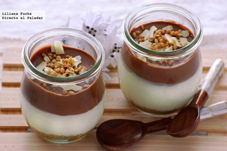

Ingredientes
- 480 ml de leche de coco
- 3 yemas de huevo
- 45 gramos de azúcar morena
- Una pizca de sal
- 1 cucharadita de extracto de vainilla
- 170 gramos de chocolate semiamargo, picado o roto en pedazos (más para decorar)
- Guarnición opcional: rodajas de banano y virutas de chocolate
Procedimiento
- En una cacerola mediana, calienta la crema, las yemas de huevo, el azúcar y la sal a fuego medio. No dejes que la mezcla hierva. Remueve continuamente la mezcla hasta que espese lo suficiente como para cubrir la parte posterior de una cuchara, durante unos 5 minutos.
- Retira la cacerola del fuego y agrega la vainilla. Añade el chocolate picado y deja reposar durante unos 3 minutos.
- Con un batidor pequeño, comienza a revolver en el centro de la cacerola hasta que la mezcla sea homogénea. (Si accidentalmente sobrecalienta la mezcla y se formaron grumos, puedes eliminarlos colando la mezcla en un tazón).
- Transfiere la mezcla a moldes y refrigera por al menos 3 horas.
- Sirve con virutas de chocolate y crema batida si lo deseas.
Imagen de Referencia
